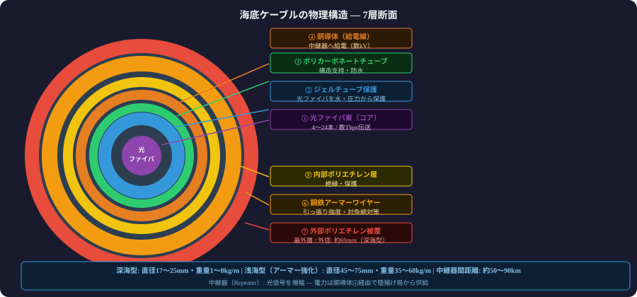
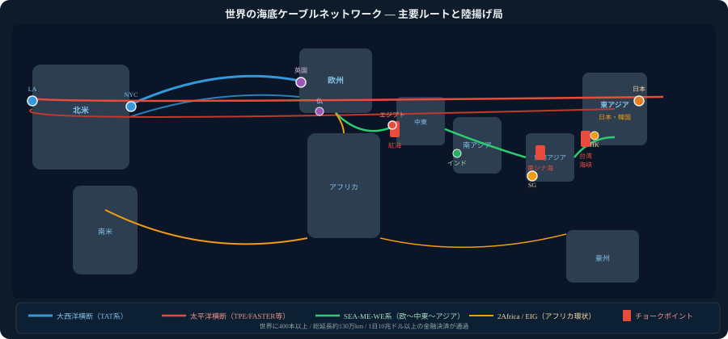
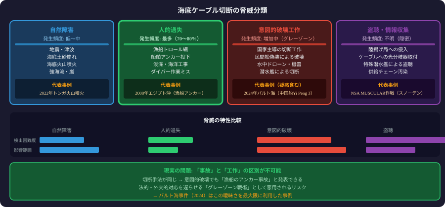
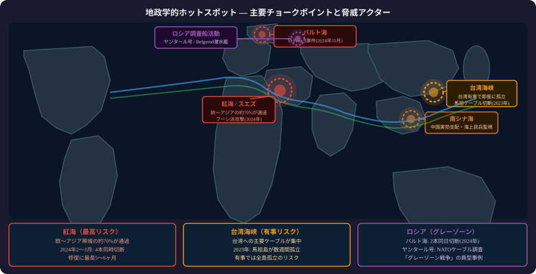
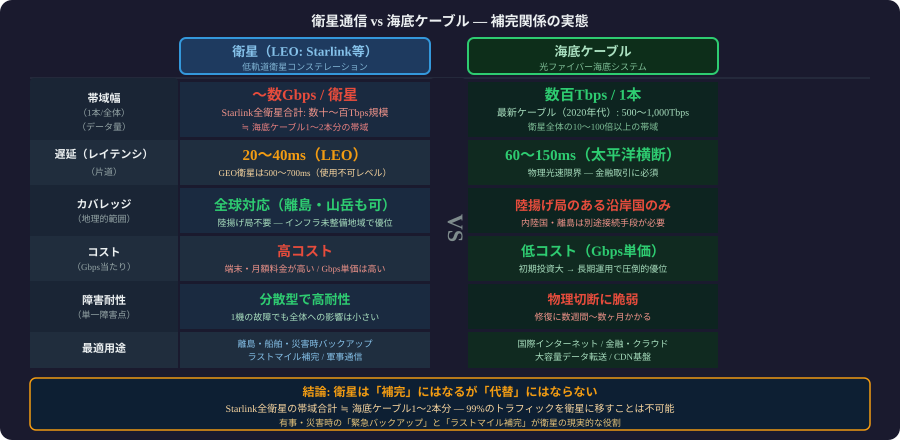

切断リスクから地政学・エンジニア対策まで7部構成で解説
400本・130万kmのケーブルが世界データ通信の99%を担う
衛星の100倍以上の容量で低遅延を実現するのが海底光ファイバ


1858年から160年かけてインターネットの物理基盤が完成した
修復は水深別の専用船が必要で完了まで数週間かかる
テレコム連合からGAFAMの単独所有へシフトが加速している
Googleは独自ケーブル網でCDN遅延とコストを最小化する
ハイパースケーラーはケーブル所有でクラウド競争優位を確保
Metaのケーブルは容量世界最大クラスの自社専用インフラ
敷設船は世界に数十隻しかなく需要過多で修復が遅延する
敷設船不足が海底ケーブル冗長化の最大のボトルネック

地震・海底地滑りで太平洋ケーブルが同時多断線した事例
台湾地震でアジア全域の通信が数週間停止した前例がある
漁船のアンカーと底引き網が全障害の70〜80%の原因
遵守が任意のIALA海図と浅海ケーブル無防備が年間数百件を招く
バルト海のケーブル断線はロシアによる故意破壊の疑いあり
「Yi Peng 3」がアンカー引きずり証拠残しNATOの調査要求を拒絶

紅海・台湾海峡・南シナ海はケーブルの地政学的急所
単一チョークポイントが切断されると大陸間通信が壊滅する
ロシアの調査船が海底ケーブルルートを事前マッピングしている
平時の調査活動が有事の破壊工作の準備になっている可能性
NSAがケーブル着陸点で傍受した内部文書がSNOWDENで暴露
陸揚げ局経由の物理盗聴と中国系企業排除が安全保障の核心
2024年アフリカ沖断線でSub-Saharan Africa全体が数週間影響
欧亜帯域25〜30%喪失でインドのIT業務が数日停止した実例
BGPは障害を自動迂回するが帯域制約で速度低下は避けられない
障害伝播はBGP収束時間の数分間で世界中に波及する
クラウドのマルチリージョン設計でも海底断線は防ぎきれない
SLA99.9%は海底断線を考慮していない設計上の死角がある
SWIFTはケーブル障害で決済遅延が発生し市場が不安定化
主要チョークポイント同時切断でGDPに1日数千億円の損害が出る
修復コストは1件平均100万ドルで修復完了まで平均6週間
深海切断の修復は2〜3ヶ月・複数同時なら最長6ヶ月かかる
冗長化設計は陸側に偏りチョークポイントの多重化が不十分
同一海峡に集中するルート設計が「単一障害点」を生む

フランス・英国・日本が海底インフラ専任の監視部隊を設立
経済安保法で海底ケーブルを特定重要インフラに指定し国内強化へ
NATOは海底インフラをCritical Infrastructureとして軍事保護
同盟間のケーブル監視データ共有体制が急速に整備されている
システム設計者は海底断線を想定したDR計画を持つべき
Starlinkは補完手段で代替ではなく遅延・容量に根本的限界
マルチキャリア・マルチパスで海底断線への依存度を下げる
障害時に自動でトラフィックを迂回させるアーキテクチャが必要
ITU・ICPC・各国政府の規制動向が設計制約に直結する
信頼性ある設計にはTeleGeographyとNATO文書が必読の一次資料
Additional stats row